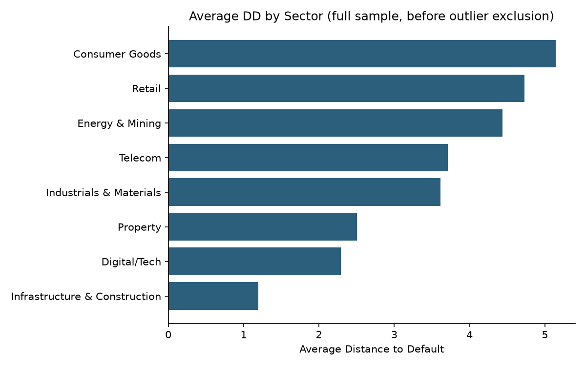
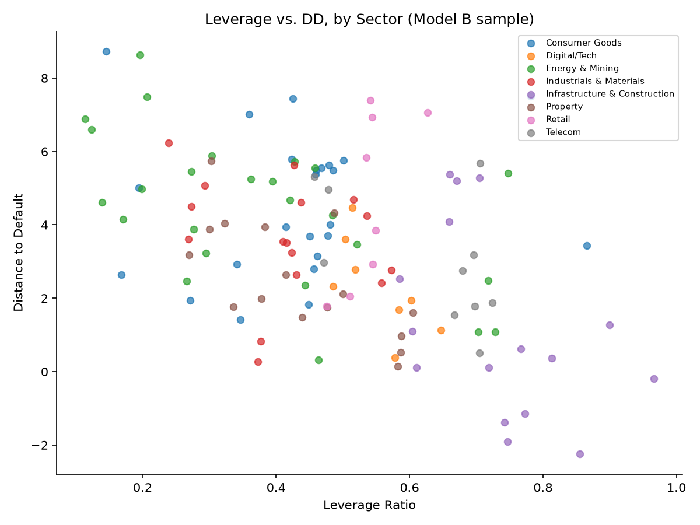
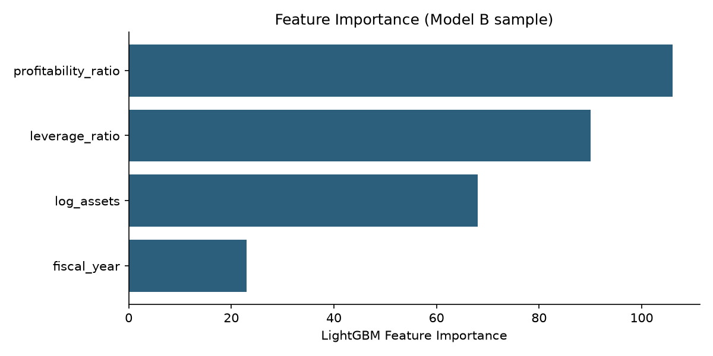
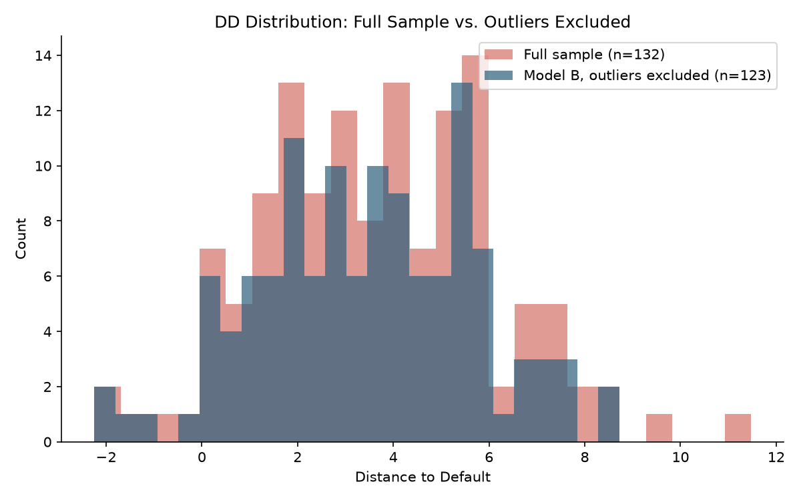

Credit Risk and Firm Fundamentals: A Distance-to-Default Approach
A Bharath-Shumway Distance-to-Default model for non-financial IDX-listed firms, benchmarked against a gradient-boosted machine learning model — testing whether firm leverage and profitability explain credit risk beyond what’s already mechanically built into the structural model itself.
At a glance
- Status
- Ongoing
- Method
- Distance-to-default, panel OLS, gradient boosting
- Application
- Corporate credit risk, IDX-listed firms
- Toolchain
- Python
Empirical results finalized (baseline model, robustness checks, ML benchmark); written analysis in progress.
Key results
The question
The Merton/Bharath-Shumway Distance-to-Default framework prices credit risk directly from equity markets — market value, volatility, and leverage — without needing a firm’s own default history. But leverage is also mechanically embedded in the DD calculation itself, which raises an obvious question: once you control for that, does anything about a firm’s actual fundamentals — its profitability, its size — still explain variation in credit risk? Or is the structural model just restating its own inputs?
Data & sample
33 non-financial firms listed on the Indonesia Stock Exchange, spanning eight sectors, 2022–2025 (132 firm-years). Banks are excluded on structural grounds — a bank’s leverage ratio reflects deposit-taking, not distress, so applying Merton/Bharath-Shumway to financial institutions produces misleadingly low apparent default risk. Price and financial statement data is sourced via Yahoo Finance and assembled into a firm-year panel.
One data issue surfaced and corrected during the build: five major commodity exporters (ITMG, INCO, PGAS, ADRO, MEDC) report financial statements in USD while trading in IDR. Left uncorrected, this currency mismatch inflates DD for exactly these firms by roughly the USD/IDR exchange rate — and, before the fix, produced what looked like a genuine “commodity supercycle” signal in the Energy & Mining sector. Confirmed directly via each firm’s reporting-currency metadata and corrected using the historical exchange rate matched to each fiscal year-end, not a single current rate.
Methodology
Distance-to-Default is computed via the Bharath-Shumway naive approximation to Merton’s model, using market equity, a debt-volatility proxy, and each firm’s face value of debt. The baseline regression explains DD using leverage, profitability (ROA), and firm size (log assets), with year fixed effects for common macro shocks and firm-clustered standard errors. A second specification adds sector fixed effects, since sector-level shocks (real ones — a genuine commodity cycle, not the currency artifact above) can otherwise masquerade as individual-firm outliers. A gradient-boosted model (LightGBM), evaluated via firm-grouped cross-validation to prevent a firm’s own history leaking across folds, benchmarks whether a flexible model captures anything the linear specification misses.
Key findings
Leverage and profitability both explain DD robustly and correctly-signed across every specification tested — with and without sector controls, with and without outlier exclusion. Firm size does not: an initial regression showed a significant, counterintuitive negative coefficient on firm size, which fully disappeared once the currency mismatch above was corrected. That coefficient was the data error, not a real pattern — a useful reminder that a statistically significant result is not the same as a real one.



Out-of-sample, LightGBM essentially ties the linear baseline (RMSE 1.71 vs. 1.73) rather than beating it outright — a modest but real difference from an earlier draft where an uncorrected data issue was inflating the apparent gap between the two models. Read plainly: once the data is clean, a flexible model finds little beyond what a well-specified structural model already captures. That is itself the finding, not a null result to explain away.

Full results
| Variable | N | Mean | Std dev | Min | Max |
|---|---|---|---|---|---|
| Distance to Default | 132 | 3.681 | 2.445 | −2.245 | 11.475 |
| Leverage Ratio | 132 | 0.485 | 0.187 | 0.114 | 0.966 |
| Profitability (ROA) | 132 | 0.071 | 0.078 | −0.194 | 0.455 |
| Log(Total Assets) | 132 | 31.611 | 0.948 | 28.726 | 33.860 |
| Variable | Model A coef | Model A p | Model B coef | Model B p |
|---|---|---|---|---|
| Leverage Ratio | −4.281 | 0.001*** | −3.970 | 0.000*** |
| Profitability (ROA) | 13.039 | 0.000*** | 17.383 | 0.000*** |
| Log(Total Assets) | −0.169 | 0.440 | −0.125 | 0.483 |
| N | 132 | 123 | ||
| R-squared | 0.384 | 0.452 |
*** p<0.01 ** p<0.05 * p<0.10
| Model | Out-of-sample RMSE | Out-of-sample R² |
|---|---|---|
| OLS (Model B spec) | 1.733 | 0.400 |
| LightGBM | 1.707 | 0.419 |